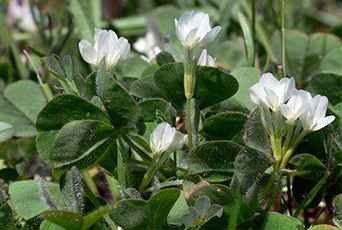

Specie: Trifolium subterraneum
Taxonomy: Fabaceae; Papilionoideae; 50 kb inversion clade; NPAAA clade; Hologalegina; IRL clade; Trifolieae; Trifolium
Abbr: Tsu
Level: Chromosome
chromosome number: 2n=2X=16

Introduction: Trifolium subterraneum, the subterranean clover[2] (often shortened to sub clover), subterranean trefoil, is a species of clover native to Europe, Southwest Asia, Northwest Africa and Macaronesia. The plant's name comes from its underground seed development (geocarpy), a characteristic not possessed by other clovers. It can thrive in poor-quality soil where other clovers cannot survive, and is grown commercially for animal fodder. There are three distinct subspecies used in agriculture, each with its own ideal climate and soil type, allowing for wide distribution of the plant over varied environments. This species is self-fertilizing, unlike most legume forage crops such as alfalfa and other clovers, which are pollinated by insects, especially honeybees. The flowers of subclover are often located beneath its leaves and are low in nectar, making access both difficult and unappealing for bees. These characteristics also make the plant less attractive to certain types of pest insects. Subterranean clover is one of the most commonly grown forage crops in Australia.[3] It provides high quality forage to livestock.[4] It is also grown in places such as California and Texas, where the extreme ranges of soil type and quality, rainfall, and temperature make the variable tolerances of sub clover especially useful.
Distribution: Albania, Algeria, Azores, Baleares, Belgium, Bulgaria, Canary Is., Corse, East Aegean Is., France, Great Britain, Greece, Hungary, Iran, Iraq, Ireland, Italy, Kriti, Krym, Lebanon-Syria, Libya, Madeira, Morocco, Netherlands, North Caucasus, Palestine, Portugal, Romania, Sardegna, Sicilia, Spain, Transcaucasus, Tunisia, Turkey, Turkey-in-Europe, Ukraine, Yugoslavia
Data source: The sequencing data and genome assemblies have been deposited in NCBI with the BioProject ID PRJNA679437 and PRJNA512907 (SRR14657175). The genome assemblies and annotations are available at Legumepedia (https://cegresources.icrisat.org/legumepedia/index.php).